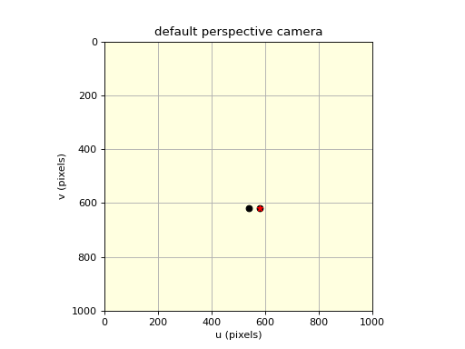

machinevisiontoolbox.Camera.SphericalCamera.plot_point
- SphericalCamera.plot_point(P, *fmt, return_artist=False, objpose=None, pose=None, ax=None, **kwargs)
Plot points on virtual image plane (base method)
- Parameters
P (ndarray(3,), ndarray(3,N), or ndarray(2,), ndarray(2,N)) – 3D world point or points, or 2D image plane point or points
objpose (
SE3, optional) – transformation for the 3D points, defaults to Nonepose (
SE3, optional) – pose of the camera, defaults to Noneax (
matplotlib.axes) – axes to plot intokwargs – additional arguments passed to
plot
- Returns
Matplotlib line objects
- Return type
list of
Line2d
3D world points are first projected to the image plane and then plotted on the camera’s virtual image plane. Points are organized as columns of the arrays.
Example:
>>> from machinevisiontoolbox import CentralCamera >>> from spatialmath import SE3 >>> camera = CentralCamera.Default() >>> camera.plot_point([0.2, 0.3, 2]) >>> camera.plot_point([0.2, 0.3, 2], 'r*') >>> camera.plot_point([0.2, 0.3, 2], pose=SE3(0.1, 0, 0))
(Source code, png, hires.png, pdf)
 - Note
Successive calls add items to the virtual image plane.
This method is common to all
CameraBasesubclasses, but it invokes a camera-specific projection method.
- Seealso
plot_line2plot_line3plot_wireframeclf
{kind=link}
{kind=link}